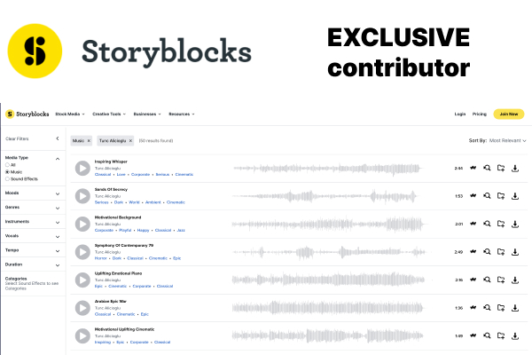

Portfolio





Tunç Alicioğlu is an accomplished composer based in Istanbul, renowned for crafting highly realistic orchestral mockups and producing high-quality soundtracks for films, games, and television. By seamlessly blending advanced digital techniques with live acoustic recordings, Tunç creates immersive and evocative music that enhances the emotional impact and narrative depth of any project.
Tunç's expertise extends beyond digital orchestration; he is proficient in playing a variety of acoustic instruments, including drums, darbuka, tambourine, oud, guitar, and piano. His musical style is a unique fusion of his Middle Eastern heritage and Western influences, resulting in compositions that are both culturally rich and sonically diverse.
Through close collaboration with directors and creators, Tunç ensures that every soundtrack is meticulously tailored to match the specific vision and atmosphere of the project. Whether working on a feature film, an indie game, or a television series, his dedication to excellence guarantees a soundtrack of unparalleled quality and impact.
With the establishment of musiccinematic.com, Tunç aspires to expand his network and collaborate with like-minded professionals. While fully committed to composing full-time, the current landscape has posed challenges in securing opportunities to showcase his talents widely. Tunç is eager to connect with projects, even those with limited budgets, to build relationships and contribute his skills. If you have a project that could benefit from exceptional music, please don't hesitate to reach out.
I highly value networking and collaborative opportunities. If you have a project that could benefit from exceptional cinematic music, feel free to reach out. Whether your budget is limited or extensive, we can work together to bring your vision to life. Let's discuss how we can enhance your project's narrative through powerful and evocative music.
Contact Me